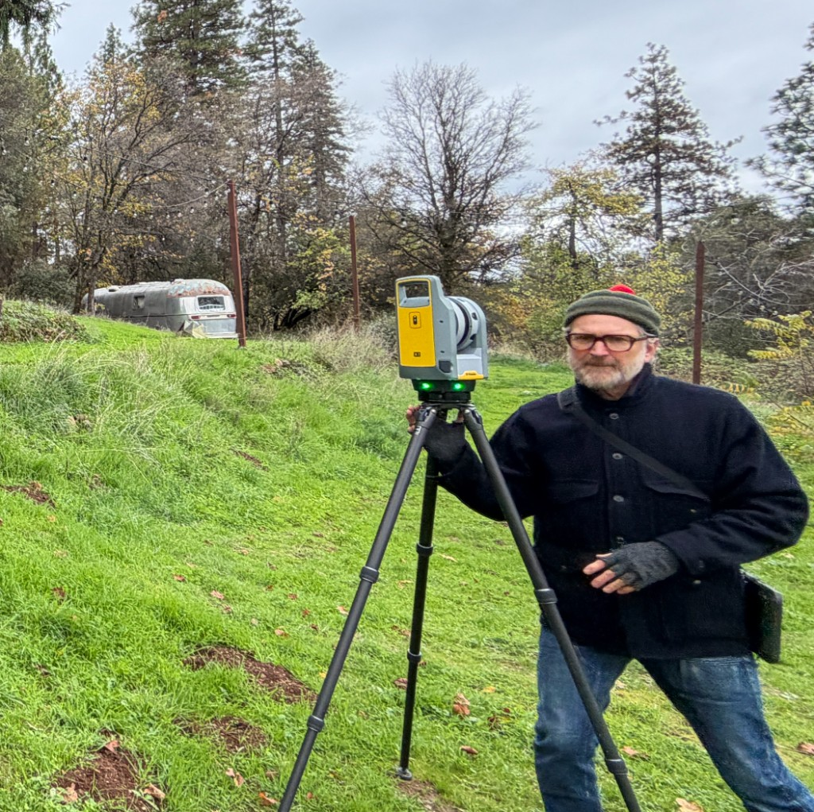
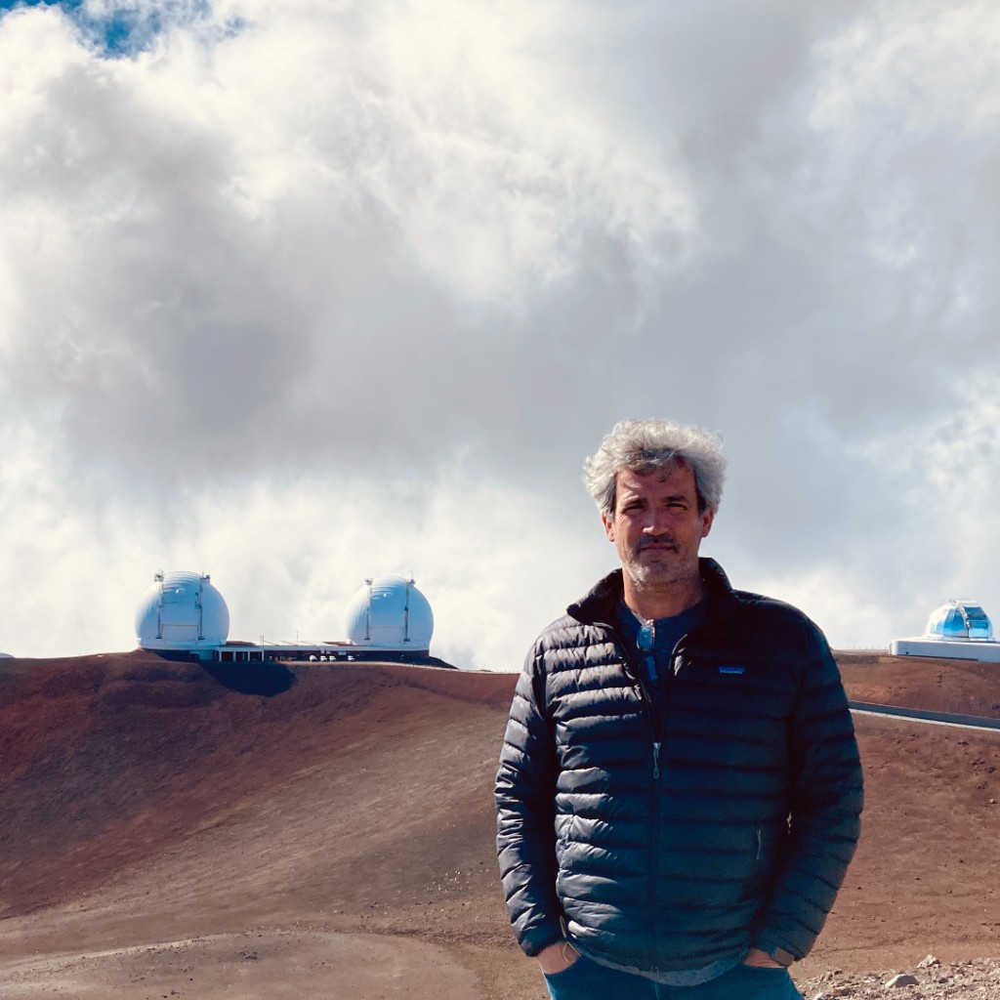

For more than a decade, the team behind Ground Truth 3D has focused on one thing: documenting what is actually there. We combine LiDAR scanning, 360° photography, drone capture where it fits, and disciplined modeling and drafting so owners, architects, and builders share a single, verifiable picture of a site or building before design and construction move forward.
Ground Truth Founders

Kelly Green
Graduate of The University of Texas, BFA
Kelly ran operations and facities for several Bay Area tech startups and has extensive experience documenting millions of square feet of all kinds of buildings for Google, Apple, Uber, LinkedIn and many, many more.

Jamie Roche
Graduate of Yale University, BArch
Jamie was the founder and CEO of HELIX RE, a software platform used by many of the top Real Estate, Engineering and Architecture firms to quickly and cost effectively create and host Digital Twins of commercial, manufacturing, civic buildings.
At HELIX RE, our clients ranged from Gensler and Aecom and National Parks to award-winning local architects, interior architects, contractors, and property operators. Since founding Ground Truth 3D our focus has moved from creating and hosting digital twins to providing existing conditions documentation for commercial, residential, and civic buildings.
At Ground Truth 3D, every engagement is scoped to what the project needs—whether that is a lean set of 2D plans, a basic 3D BIM LOD200 existing-conditions model, or a full digital twin documentation package.
“Ground truth” is information that is known to be real or true, provided by direct observation and measurement.
We deliver the observed and measured "facts on the ground"
We carry that idea into every deliverable including: accurate LiDAR point clouds, comprehensive 360° photography, and CAD/BIM models your team can rely on when stakes are high and surprises are expensive.Questions about scope, timelines, or deliverables? Start a conversation.
Get in Touch